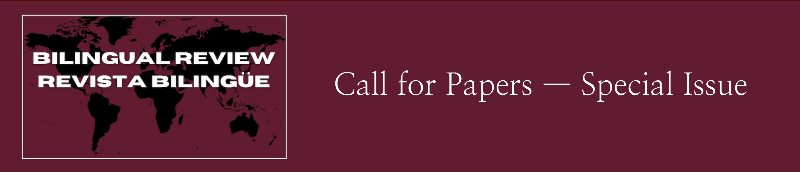

Bi-Multilingual Education Around the World:
Advancing the International and Comparative Dialogue.
Guest Editors
Cristian R. Aquino-Sterling, Ph.D.
Texas Tech University, United
States of America
Antonieta Heyden Megale, Ph.D.
Universidade Federal de São Paulo, Brasil
María Luisa Pérez Cañado, Ph.D.
Universidad de Jaén, España
Bi-Multilingual education continues to build momentum around the world —
yet if we are to create the conditions for internationalizing the field,
building scholarly bridges for advancing systematic and sustained
dialogue across national contexts becomes an essential task. This
multilingual special issue of
Bilingual Review/Revista Bilingüe
(Chinese, English, French, Portuguese, Spanish) centers on current
significant advances, challenges, opportunities, and future directions
in bi-multilingual education policy, research, practice, and advocacy
across national contexts. Prospective authors are invited to draw on the
most up-to-date and impactful scholarship produced and/or taken up
within specific countries to contribute descriptive-analytic works that
depict comprehensive understandings of current social, cultural, and
political contexts of bi-multilingual education within respective
localities. Taken together, the timely contributions in this special
issue illustrate current multifaceted approaches to imagining,
conceptualizing, and realizing bi-multilingual education
internationally. This work sets the foundations and serves as a starting
point for scholars to begin to foster a systematic and sustained
comparative and international dialogue on significant advances and
standing challenges that characterize bilingual education around the
world today.